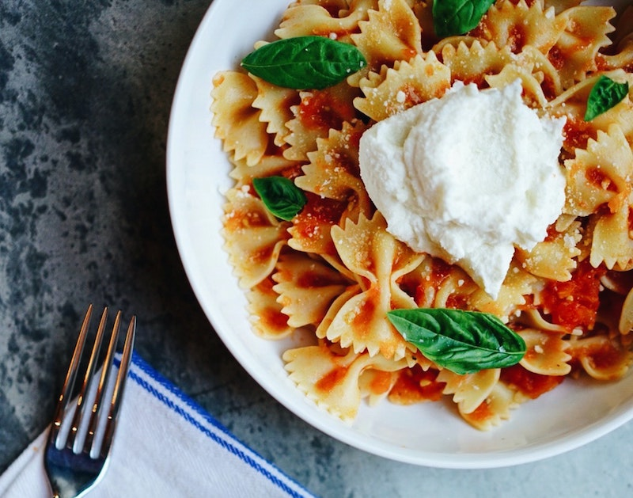

Pasta

Pasta Alla Vodka
Try our easy pasta all vodka recipe today.
Ingredients
- 16 oz Pasta
- San Marzano Tomatoes
- Butter
- Heavy Cream
- Vodka
Steps
- Boil pasta in salted water.
- Melt butter in pan and cook tomatos on medium heat.
- Add 3/4 cups vodka and stir until alcohol cooks off.
- Pour in heavy cream and stir.
- Add salt and pepper to taste.